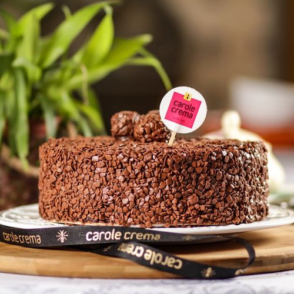

Mussum Ipsum, cacilds vidis litro abertis. Suco de cevadiss, é um leite divinis, qui tem lupuliz, matis, aguis e fermentis. Per aumento de cachacis, eu reclamis. Si num tem leite então bota uma pinga aí cumpadi! Quem num gosta di mé, boa gentis num é.
Dificuldade: Facil | 68 visitas | 5 estrelas | Porção: 8 pessoas
Desenvolvido por Matheus Gregorio Simoni © 2019